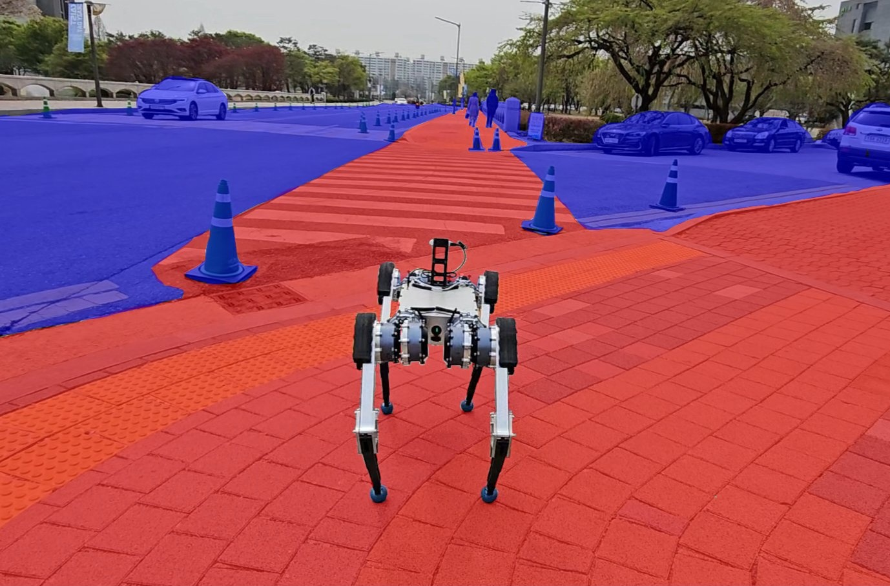
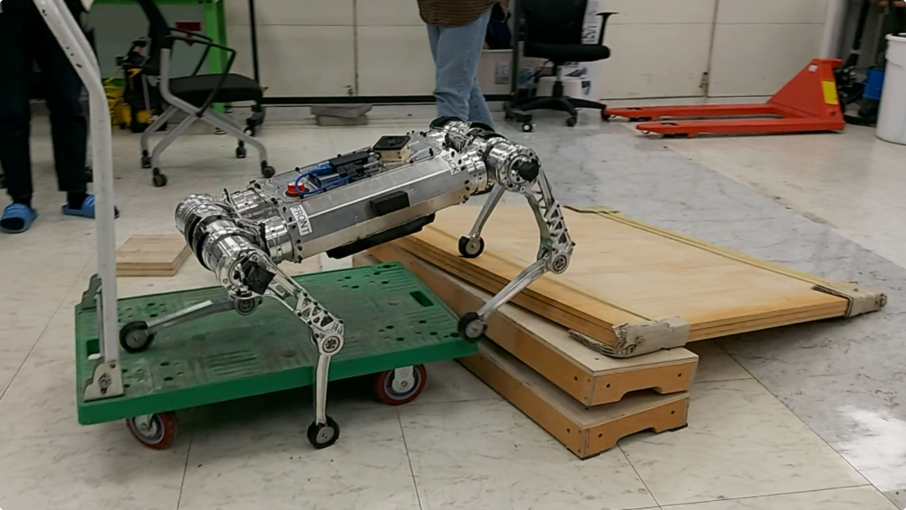
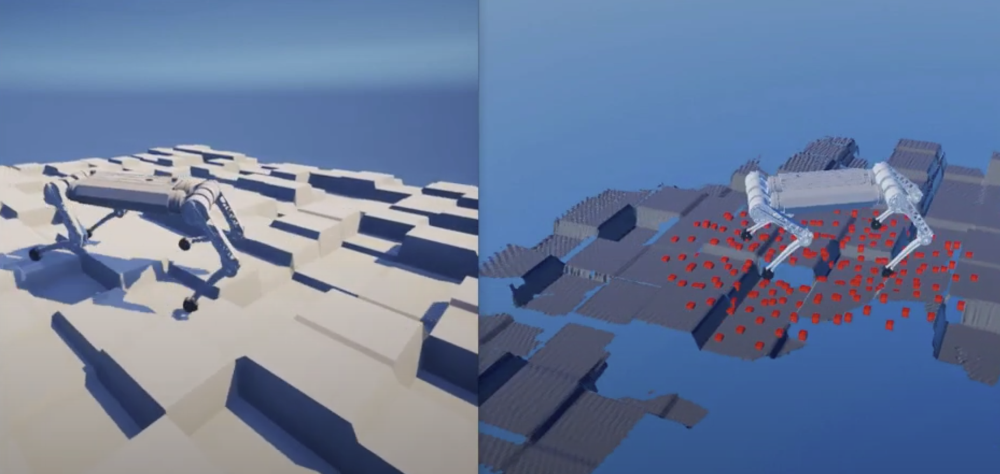
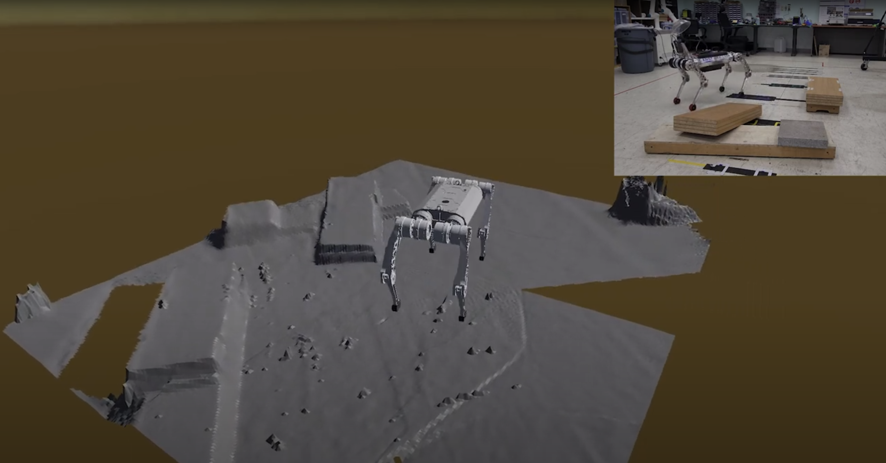

Dohyeong Kim, Yunho Kim, Kyungjae Lee, Songhwai Oh
International Conference on Intelligent Robots and Systems (IROS) 2022
[Paper] [Summary video]
| I am a roboticist at Neuromeka AI team. Currently, I am undertaking research on bi-manual manipulation and high-level motion planning, mentored by Joonho Lee. Before joining Neuromeka, I received my MS at KAIST (Korea Advanced Institute of Science and Technology) and BS at Seoul National University, both majoring in mechanical engineering. During my study at KAIST, I was fortunate to be advised by Prof. Jemin Hwangbo and conducted research on legged robot locomotion and navigation. |
|  |
Learning Semantic Traversability with Egocentric Video and Automated Annotation Strategy Yunho Kim*, Jeong Hyun Lee*, Choongin Lee, Juhyeok Mun, Donghoon Youm, Jeongsoo Park, Jemin Hwangbo IEEE Robotics and Automation Letters (RA-L) 2024 [Project page] [Summary video] |
|  |
Not Only Rewards But Also Constraints: Applications on Legged Robot Locomotion Yunho Kim, Hyunsik Oh, Jeonghyun Lee, Jinhyeok Choi, Gwanghyeon Ji, Moonkyu Jung, Donghoon Youm, Jemin Hwangbo IEEE Transactions on Robotics (T-RO) 2024 [Project page] [Summary video] |
|
Safety Guided Policy Optimization Dohyeong Kim, Yunho Kim, Kyungjae Lee, Songhwai Oh International Conference on Intelligent Robots and Systems (IROS) 2022 [Paper] [Summary video] |
 |
Learning Forward Dynamics Model and Informed Trajectory Sampler for Safe Quadruped Navigation Yunho Kim, Chanyoung Kim, Jemin Hwangbo Robotics: Science and Systems (RSS) 2022 [Project page] [Summary video] |
|  |
Perceptive locomotion [Point-goal command video] [Velocity command video] Design perceptive locomotion controllers for quadruped robots using deep reinforcement learning. |
|  |
Terrain mapping [Simulation video] [Real-world video] Implement 2.5D terrain mapping pipeline in both the simulation and the real world. |
 |
Learning Multiple Gaits of Quadruped Robot Using Hierarchical Reinforcement Learning [Project page] Propose a multiple-gait learning framework inspired by central pattern generators. |
 |
Speech2Pickup: Speech Embedding Based Human-Robot Collaboration Model for Multi Object Robot Grasping Task [Code] Process data and train a deep neural network to detect objects given speech commands. |
 |
Autonomous RC Car [Code] Implement path tracking and planning algorithms for autonomous RC cars. |